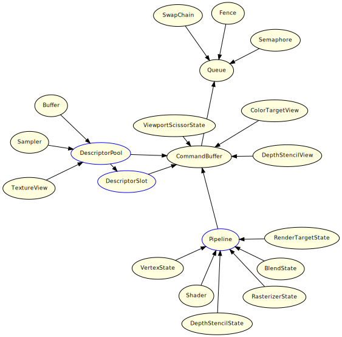

Execution Model
Execution Model
Models used when executing instructions on the GPU are described.
Ultimately, instructions to the GPU are prepared by setting a command in nn::gfx::Queue. To reliably issue commands to the GPU, call Flush or Sync for nn::gfx::Queue.
Illustration of the Execution Model
The arrow indicates setting a start point object in an end point object.
For a relationship diagram built by each object, see Construction Model.
The objects in blue boxes are not required for some low-level graphics APIs.

CONFIDENTIAL